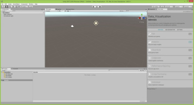

Chapter 4: Start with Unity
4.1 What is Unity
Unity is a runtime development environment for game design that is developed by the company
4.2 Download and Installation
The newest version of Unity can be downloaded here. This tutorial is using the Unity version
4.3 Create a new Project
To create a new project, follow these steps:
→ Click New in the upper right
→ Select 3D (since we want to create a three dimensional project)
→ Enter a project name, for example “Data_Visualization”
→ Select a location where you want to store your project
→ Press Create project to create your new project
→ Select 3D (since we want to create a three dimensional project)
→ Enter a project name, for example “Data_Visualization”
→ Select a location where you want to store your project
→ Press Create project to create your new project

4.4 The development environment Unity Editor
Once the new project is created, the The window in the center is showing us the Asset Store. The Asset Store offers toolkits, plugins, predesigned objects and other content. Everything can be bought, downloaded and imported through the editor. Next to the Asset Store there are two other tabs for the centered window. Selecting the Game tab will open the game window, which shows an ingame view. The third tab Scene will open an overview over the game scene. Unity will add a Main Camera and a Directional Light to any new scene by default. You should see them in the scene window. On the left, next to the centered window, you can see the Hierarchy. The Hierarchy contains all GameObjects of a scene and is used to organize all GameObjects. To get further informations on a specific GameObject you can click on an object in the Hierarchy (for example the “Main Camera”), go to the rightmost window and open the tab Inspector. The Inspector contains all information about the selected GameObject. The bottom window is the project explorer. The new project contains only an empty Assets folder. This folder will store scenes, scripts and other components of the project later.